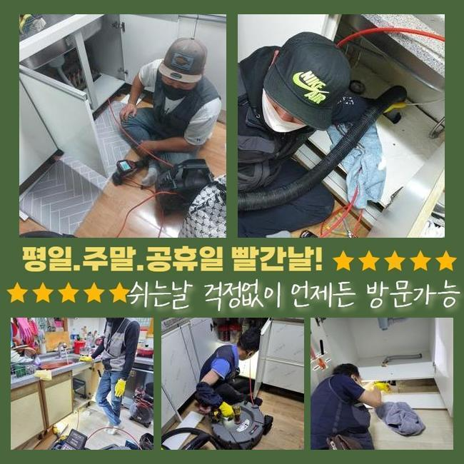
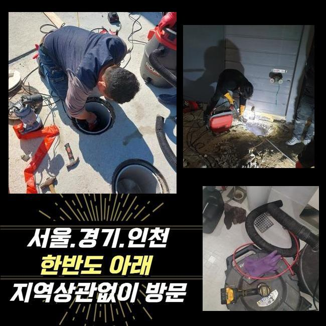
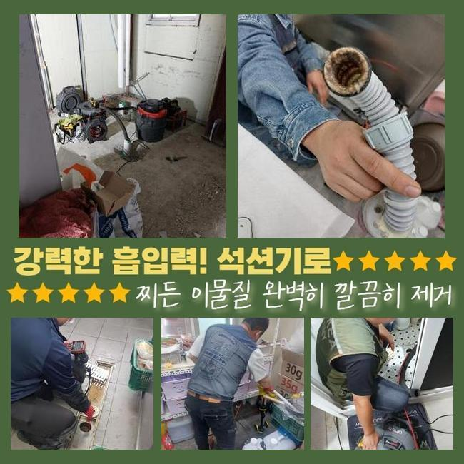
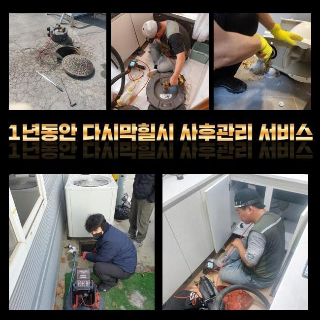
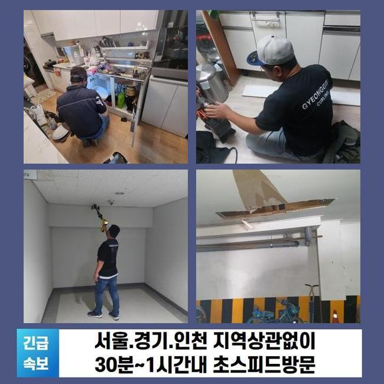
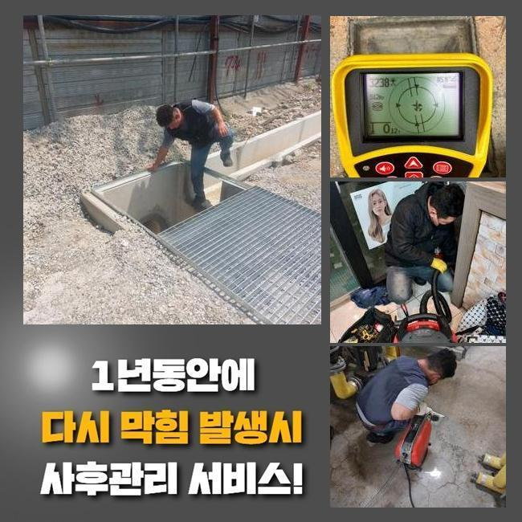

🏠 구리시 사노동하수도뚫음 아천동 맨홀역류 배관뚫는업체
용인 하수구막힘 전문 시공 후기

📋 작업 개요
- 위치: 용인
- 서비스 유형: 하수구막힘, 배관막힘, 맨홀막힘, 누수수리, 역류해결, 뚫는업체, 배관청소, 고압세척
- 작업 일시: 2024. 11. 17. 16:36
- 업체명: 하수구수사대 (010-5615-2118)
🔍 문제 상황
구리시 사노동하수도뚫음 아천동 맨홀역류 배관뚫는업체
물이 안빠지는 문제들을 시정하기위하여 실시되어야 하는건 하수라인의 주기적인 관리라고 할 수 있어요
내부라인으로 잔해가 빠지지않게끔 신경써주시고 신속한 배수를 위한 노력을 기울이시는것이 중요한데요
아파트 등의 인테리어 절차 속에서도 하수구들을 점검한 후 해당 증상을 풀어내는게 중요한데요
의뢰인의 설명과 함께 주방쪽에서 나타난 기름때문에 막힘 문제들을 시정하려면 작업들을 시작했죠
설거지등을 할 때 오일류들이 흐르며 하수관의 벽쪽에 쌓이게되었고 단단해지면서 통수불가가 생겨난 상황이었습니다
저희들은 석션기기로 입구쪽의 부유물들을 흡입하고 고착물 관리를 위하여 샤프트를 운용시켜 배수구를 세척하기에 이르렀어요
해당 과정을 거쳐 잔해물과 냄새이슈는 해소했는데요
씽크볼 안에 오수와 식재료의 잔해를 청소하고 접합된 주름관과 바닥 배수구를 관찰했지만 이상은 없었습니다
이후에 깊숙한 지점까지 살피고자 내시경을 꺼냈어요

🔎 원인 분석
💡 전문가 진단: 정밀 진단 장비를 사용하여 슬러지의 고착 여부를 판명하고 타격/세척 작업을 실시했습니다.
내시경기기로 관찰하니 입구라인엔 이상징후가 존재하지않았지만 2m 이하 부근 벽면라인에 기름들이 관찰되었어요
꾸준히 점검하였더니 엘보 구조의 부분에서 바닥 배수구를 막고 있는 이물을 찾아냈죠
해당 잔해들이 통로를 좁혀 증상이 야기된 것으로 판단했어요
그 다음으로는 이물의 양상에 따른 해결방법을 세워보았습니다
잔해물질들이 굳어버리는 바람에 하단부를 막는 상황들 속에서 샤프트기기를 운용시켜 기름때들을 파쇄하고 세척을 이행했죠
덧붙여 4미터 라인에서는 체인의 회전력을 써서 슬러지들을 분쇄시켜 제거시켰는데요
주위에서 구매가능한 용품처럼 단순하게 해결하는데 적합한 장비들론 무리였기에 전문성이 동반되어야 하는 작업들로 문제없이 마무리 되었고 심층부까지 깨끗히 정리했습니다
이전과 달리 하수관의 신속한 유수가 제자리를 되찾아 각 설비의 성능들을 지킬 수 있었습니다
주방쪽의 해당 증상을 얼추 해결하고 외부의 하수구도 체크해보았죠
외부라인의 하수관로도 대량의 오염원이 축적되어 작업이 어려울 것으로 판단되었어요

🔧 작업 과정
물호스를 연결하여 하수라인들을 흡입하고 이물을 석션기로 제거시켰는데요
내시경기기로 관로 속을 체크해보았더니 고착화 현상이 결코 가볍지 않았어요
이와 같은 문제의 경우 집수시설로 나아가는 흐름들을 막아서기에 내부적으로 손상을 발생시키기도 합니다
하수도에 누수증세가 생겨난다거나 배수관로가 손상된다라면 교체도 고려해야합니다
의뢰자께도 석션과 같은 기기가 아닌 고수압의 기계의 통한 작업을 추천하였고 이전과의 차이와 청소에 대한 계획을 안내했어요
의뢰자께서도 하수관의 상태를 무겁게 생각하시어 고압세척을 통하여 실시하기를 바라셨기에 고압수청소들을 이어나가기로 하였습니다
외부 각 라인을 청소하여 슬러지들을 청소해주는게 1순위였어요
물빠짐이 느려졌다는 것은 배수설비에 증세가 있을 수 있으므로 진단은 꼭 필요하죠
작업들을 이행할 때 생겨난 이물의 경우 청소해주며 잔해물질들이 하수도로 흐르지못하게 조심해주셔야해요
그 다음으로 고수압의 기계들을 운용시켜 고착된 이물들과 슬러지들을 제거시켰죠
심각했던 오류였던 탓에 만만치않은 과정이 될거라 예상했으나 큰 문제없이 스무스하게 진행된 덕에 완료까지의 시간자체를 줄였는데요
해당 절차를 완료시키고 다시금 내시경기기로 내측의 잔존 잔여물질이 있는지 검수도 빈틈없이 진행시켰죠
배수장애를 예방할 목적이라면 주기성을 갖추어 점검을 실시 해주는것이 좋은데요
추후를 위해선 예방하는것에 또한 신경 써야 합니다
해당 사안들을 신경쓴다면 추후 하수관의 기능들을 확보할 수 있어요
마지막으로 샤프트장치를 쓰고서 잔해물질과 같이 더러워진 상태또한 마무리까지 해주었는데요


✅ 작업 완료
각 관로가 막힌 상태에서 혼자서 시정하기위하여 해당 정보를 모색하는 과정도 도움이 되는데요
하지만 현 사례의 장소와 같이 식당 등에서 간소하게 개선이 없으면 전문업체를 찾아 상담해볼것을 권해드립니다
물막힘의 경우 알맞은 대응을 방임한다면 걷잡을 수 없는 문제까지 불러일으켜요
이에 따라 빠르고 해결과 직결되있는 대처들이 필요하겠습니다
통수상태에 문제가 생기면 전화 주시면 되겠습니다 안정성을 바탕으로 의뢰인의 불편들을 해소하겠습니다




⚠️ 베란다 누수 및 방수 관리 방법
- ✅ 비가 많이 올 때 창틀 주변이나 아래층 천장에 얼룩이 생기는지 정기적으로 확인해 보세요.
- ✅ 우수관 주변 실리콘 마감이 들뜨거나 깨진 틈새가 있는지 손상 여부를 수시로 체크하세요.
- ✅ 베란다 바닥 타일의 줄눈(메지)이 소실되면 그 틈으로 물이 침투하여 누수가 유발됩니다.
- ✅ 누수 의심 증상 발견 시 방치하면 아래층 손실이 커지므로 즉시 전문가의 진단을 받으십시오.
💡 핵심 정리
- 확실한 장비 작업(내시경 점검 및 샤프트 스케일링)으로 원인을 뿌리 뽑습니다.
- 작업 후 1년 이내에 동일한 부위 재발 시 100% 무상 A/S 서비스를 보장합니다.
- 서울 · 경기 · 인천 전 지역에 24시간 언제든 긴급 출동할 수 있도록 항시 대기 중입니다.
❓ 자주 묻는 질문 (FAQ)
🚨 용인 하수구막힘 문제로 고민이신가요?
정확한 원인 진단과 확실한 시공으로 재발 없는 해결을 약속드립니다.
24시간 긴급 출동 | 서울 · 경기 · 인천 전지역 | 1년 내 재발 시 무상 A/S